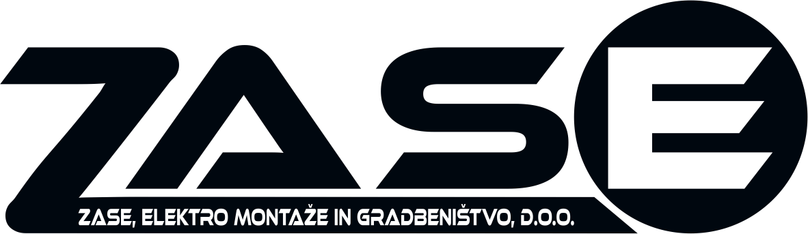

Gradbeni nadzor
Svetovalni in izvedbeni inženiring
Izvedba gradbenih del
Zasnova in projektiranje objektov
Pridobivanje projektne dokumentacije
Zasnova, izvedba in vzdrževanje sončnih elektrarn
- Z vami smo od začetka do konca gradnje. Vse od zakoličenja objekta do predaje uporabnega dovoljenja.
- Pomagamo vam, da gradnja poteka v skladu z zakonodajo, stroko, gradbenim dovoljenjem ter PZI projektno dokumentacijo.
- Redno spremljamo izvedbo del na gradbišču ter skrbimo za vsakodnevno vodenje Dnevnika gradnje.
- Nadzorujemo preračunano in porabljeno količino materialov, da čim bolj zmanjšamo stroške gradnje.
- Seznanimo vas z najpogostejšimi napakami med gradnjo in jih v vašem primeru preprečimo.
- Pravočasno vas opozorimo na morebitne zaplete pri gradnji in predlagamo rešitve.
- Poskrbimo, da med gradnjo ne bodo potrebna dodatna dela, ki bi lahko dvignila stroške vašega projekta.
- Ves čas gradnje smo vam na razpolago za dodatna vprašanja.
- Pomagamo vam pri izbiri izvajalcev ter pogajanjih z njimi in takoj ukrepamo v primeru nepravilnosti.
- Prevzamemo koordinacijo med različnimi izvajalci del, vodimo sestanke.
- Ne nadzorujemo le kvalitete izvedbe, temveč tudi kvaliteto uporabljenih materialov.
- Skrbimo, da dela potekajo v skladu s terminskim planom.
- Svetujemo in pomagamo pri pridobitvi sredstev Eko sklada ter Slovenskega podjetniškega sklada.
- Pomagamo vam pri upravnih in drugih postopkih.